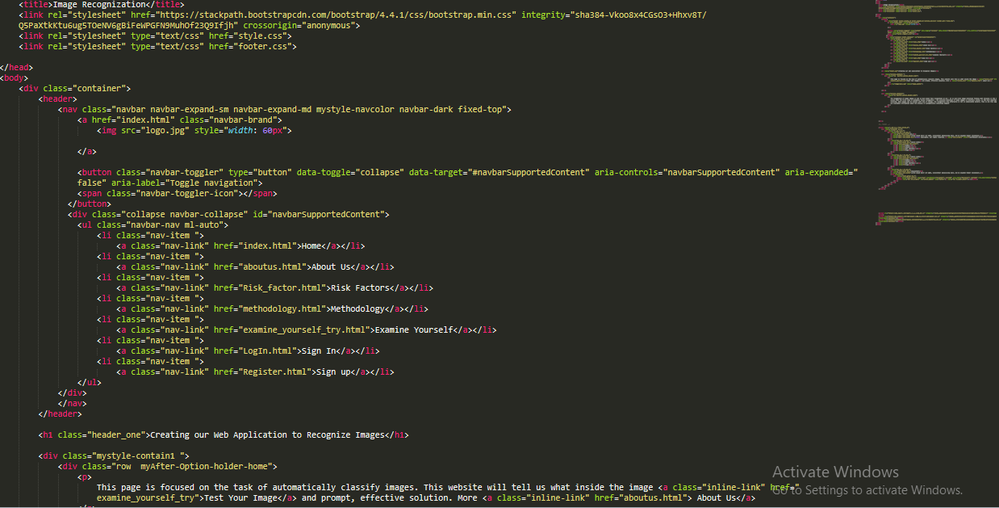
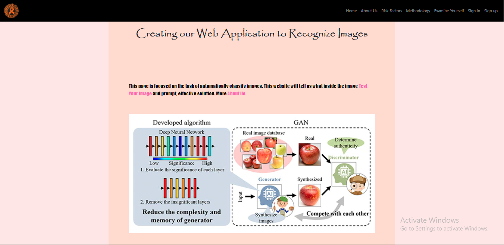

Creating our Web Application to Recognize Images
Introduction
On many occasions, we always like explaining the results of our machine learning models to our manager or to people who are not familiar with these topics. As an example, suppose we have a Deep Learning model that classify images, such as dogs, cats, … This model has good results in a test set or with some images that you have tried, but you would like that others people use their model and better if they use it from a web application. This is what this tutorial is about. We will learn how to create a web application using the tensorflow.js library and the MobileNet model. It is only necessary to know the basics in HTML and JavaScript. After following this tutorial, you may have an application similar to the following:
Table of Contents
- Tensorflow.js
- Web Applicaton
1.Tensorflow.js
Tensorflow.js is a library developed by Google where you can generate, from Javascript, Machine Learning models, specifically Deep Learning.
Advantages of using tensorflow.js:
Import an existing previously trained model and use it in your browser. The existing model can be created with Tensorflow or Keras. For this you have to install the tensorflowjs library and run the following script (for more information you can go to the following link:
Retrain an imported model. You can collect more data in the browser and using learning transfer you can continue training the model.
Train in the browser. You can use tensorflow.js to define, train and run models in the browser. The script is very similar to writing in Keras.
For this tutorial we are going to use a trained model, with ImageNet images, called MobileNet. MobileNet is an architecture of Convolutionary Neural Networks (CNN) which was created to be executed on mobile devices¹. As you know, a Convolutionary Neural Network is a Deep Learning algorithm used to learn Machine Learning models related to images, such as: classifying images, detecting objects in an image or video,…²
2. Web Application
Now let’s go for the interesting thing! We will make our web application to recognize images. For this we only need a text editor, you can use notepad ++, sublime or a simple block of notes (with which you feel more comfortable)
HTML
We will start with HTML, this will be responsible for structureing the web page. The file will be called index.html:
In order for us to use the tensorflow.js library we need to call it from HTML as follows:
We will show the probabilities and decisions of the predictions of the MobileNet model:
We will add some text on Home page and home page will look:

-
Now we are going to add a section to upload images in our web application:
- The MobileNet model has been trained with images of size 224 * 224, so we will transform the images at these scales. Result of upload image out put file looks like
- The JavaScript function that we will use to upload an image and display it, is called showFiles(event):
The output is as follows:
The output is as follows
JavaScript
JavaScript will be responsible for uploading images, calling the tensorflow.js function and making predictions using the MobileNet model. The file will be calledindex.js:
-
Frist we creat a function to upload images and display them in the browser:
-
The following script will graph the probabilities of the predictions on a bar chart. We will use the library Google:
-
Now we are going to load the pre-trained MobileNet model:
-
Finally, we predict the upload image.

Putting all codes together
HTML (file index.html)
JavaScript (file index.js)
And that is all, We have created our web application that can recognize images.